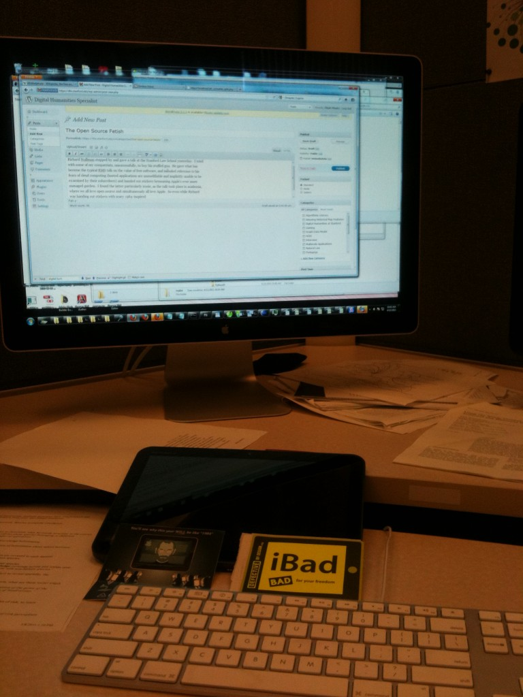

Richard Stallman stopped by and gave a talk at the Stanford Law School yesterday where I tried, with the financial support of some of my compatriots–unsuccessfully–to buy his stuffed gnu. He gave what has become the typical RMS talk on the value of free software, and included reference to his fears of cloud computing (hosted applications are unmodifiable and implicitly unable to be examined by their subscribers) and handed out stickers bemoaning Apple’s ever more managed garden. I found the latter activity particularly ironic, as the talk took place inside academia, where we all love open source and simultaneously all love Apple. So even while Richard was handing out stickers with scary 1984-inspired images of Steve Jobs looking over his iPad-enthralled slaves, he was surrounded by softly glowing MacBook Pros, secure in their universally-acclaimed industrial design.

But Stanford recently bought me a Xoom, so I knew that I had established my open source credibility. That is, if you really think, like Richard Stallman does, that open source (or free software) really is open. In my mind, it’s not so much a question of source code being withheld, as has happened with Google and Android 3.0, as it is the inherent barriers to understanding code even when that code is freely available. The more I think about this moral aspect of the open source argument, the more it sounds like it’s a call to return us to a time when moral coders looked out for their illiterate masses. After all, if you can’t read C, then does it matter to you if the source code to Linux is available? Power dynamics surrounding the availability of text in pre-universal literacy societies (as well as dealing with the pernicious issue of vernacular translations from original languages of holy texts) long pre-date the LISP genius.
The idea that code should be available to be examined ignores the widespread inability for much of society to actually perform that examination. Proponents of Free Software, like RMS, assume that it is enough that some literate coders be able to examine that code and, naturally, that such examination will protect the masses. But I’m leery of such a paternalistic narrative, even though code literacy seems unlikely to increase in the foreseeable future. Still, maybe what we need is not a Martin Luther so much as a King James, who is willing to fund and promote an attempt to translate the variety of imponderable texts written in their orthodox script into a form comprehensible to those of us who cannot read Latin or Sanskrit or Ancient Greek. Translation of important works into widely accessible forms may prove more valuable to society as a whole than ensuring those important works are available to a miniscule subset of the population, no matter how vociferously they insist that they have our best interests in mind.